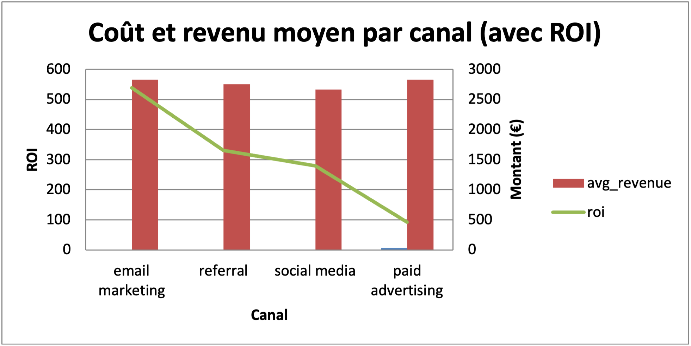
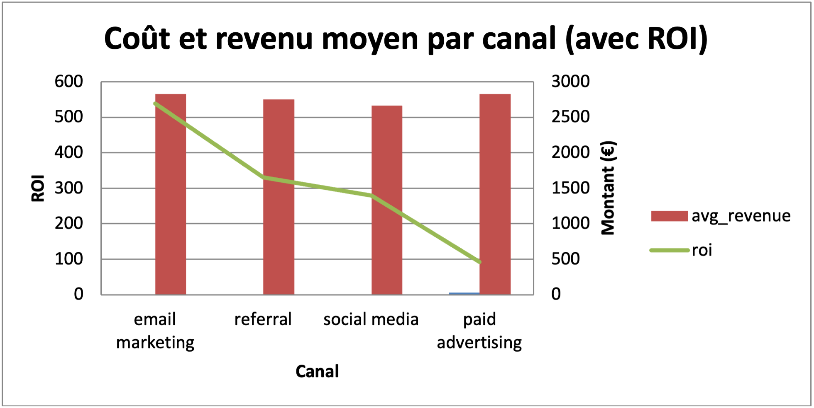

Projet Marketing / e-commerce
J'ai créé une analyse RFM sur les clients d'un site e-commerce pour identifier les segments les plus rentables, en utilisant SQL et Excel, afin de montrer mon aptitude à extraire de la valeur marketing à partir d'un historique de commandes.

 

Explication de la vidéo
1. Contexte et objectif
L’entreprise utilise plusieurs canaux marketing, notamment l’email marketing, la publicité payante, les réseaux sociaux et le parrainage. L’objectif de ce projet était d’identifier les canaux qui apportent les clients les plus rentables, afin d’optimiser les budgets marketing en se basant sur trois indicateurs clés : le revenu moyen, le coût moyen et le retour sur investissement (ROI).
2. Collecte et préparation des données
Les données ont été extraites depuis la table lifetime_clients dans SQLite via DBeaver. Elles ont ensuite été nettoyées en supprimant les doublons, en traitant les valeurs manquantes et en harmonisant les noms des canaux et des segments. Une segmentation des clients a été réalisée en fonction du revenu moyen. Les clients ont été classés en trois catégories : High Value pour le tiers supérieur, Mid Value pour le tiers intermédiaire et Low Value pour le tiers inférieur.
3. Analyses SQL
Les requêtes SQL ont permis de répondre à plusieurs questions clés. Tout d’abord, l’analyse par canal a mesuré le nombre de clients, le revenu moyen, le coût moyen et le ROI. Ensuite, une analyse croisée a été réalisée pour observer la répartition des segments High et Mid Value au sein de chaque canal. Une étude des revenus et coûts moyens par segment a permis d’identifier les différences de rentabilité entre les profils de clients. Enfin, la répartition globale des segments High, Mid et Low Value a été déterminée pour avoir une vision d’ensemble du portefeuille clients.
4. Visualisations
Quatre graphiques ont été créés dans Excel pour illustrer les résultats. Le premier est un graphique combiné, avec les coûts et revenus moyens par canal sous forme de colonnes et le ROI représenté en ligne, ce qui permet de visualiser simultanément rentabilité et performance financière. Le deuxième graphique en colonnes groupées montre le nombre de clients High et Mid Value par canal. Le troisième graphique compare les revenus et coûts moyens par segment afin de visualiser leur marge potentielle. Enfin, un diagramme circulaire présente la répartition des clients dans les segments High, Mid et Low Value.
5. Résultats et recommandations
L’analyse a mis en évidence que l’email marketing et le parrainage sont les canaux les plus rentables avec des ROI élevés, tandis que la publicité payante, bien qu’elle génère un revenu moyen élevé, présente un coût important et un ROI relativement faible. Les clients High Value sont particulièrement présents dans l’email marketing et la publicité payante. Sur cette base, il est recommandé de renforcer les investissements dans les canaux à ROI élevé, d’optimiser les campagnes sur les canaux performants, et de réévaluer ou ajuster les budgets des canaux moins rentables.
Difficultés rencontrées
Décris ici les principaux obstacles ou défis rencontrés lors de la réalisation du projet, comment tu les as surmontés, et ce que tu en as appris. Cela peut inclure des aspects techniques, organisationnels ou humains.